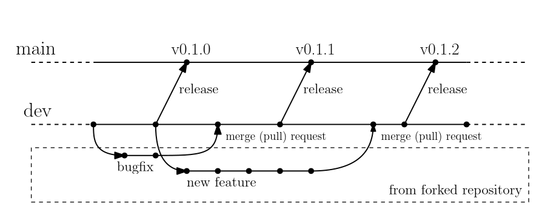

Setting Up a Development Environment#
Before contributing to Minterpy, we recommend setting up a development environment on your systems so you can start developing from the correct branch and test your changes or build the documentation.
Forking and cloning the repository#
Minterpy is hosted on GitHub; to contribute you will need to sign up for a free GitHub account.
We use Git for version control, which opens up a wide range of opportunities for people to contribute to Minterpy.
Getting started with Git#
If you’re new to Git, you can refer to the Git documentation for some learning materials.
Additionally, please refer to the GitHub documentation for instructions on installing Git, setting up your SSH key, and configuring Git. Completing these steps is essential for working seamlessly between your local repository and GitHub.
Forking the Minterpy repository#
The Minterpy project follows a forking workflow. In this model, contributors fork the repository, make changes, and then create a merge (pull) request. This means that, first and foremost, you need your own fork of the Minterpy repository to work on the code.
Go to the Minterpy repository page and click the Fork button. Make sure to uncheck the box Copy the main branch only before clicking Create fork.
For more details, see the example on forking from the GitHub documentation.
Cloning the forked Minterpy repository#
You will then need to clone your fork to your local machine.
Replace <placeholder> with your GitHub username and the name of your fork:
git clone https://github.com/<your-username>/<your-fork> <your-local-directory>
cd <your-local-directory>
git remote add upstream https://github.com/casus/minterpy
git fetch upstream
This creates the directory <your-local-directory> and connect your local
repository to the upstream repository of Minterpy.
For more details, see the example on cloning from the GitHub documentation.
About the branching model#
We loosely follow the structure of Gitflow for our branching model. There are three types of branches in the Minterpy repository:
main branch: This branch contains only the latest release. It includes fully tested, documented, and cleaned-up code. The latest release of Minterpy is summarized in the main branch CHANGELOG.md (at the top with a numbered version).
dev branch: This branch stores the development version. At any given time, the branch passes all the tests and contains a running version of Minterpy, even if the code and documentation are not in a “release state.” The latest state of development of Minterpy is summarized in the dev branch CHANGELOG.md (under Unreleased section).
Feature branches: All proposed changes to the code, be they new features, enhancements, or bugfixes, happen on these branches. These branches must always be branched out from the
devbranch (and not frommain).
When you clone a forked Minterpy repository, you will be brought to the dev
branch by default.
With your fork, you have the freedom to make any changes you like. However, when creating a merge (pull) request as a contribution, please note the following:
You need to create a merge (pull) request from a feature branch in your repository to the
devbranch of the Minterpy repository.You cannot create a merge (pull) request to the
mainbranch of the Minterpy repository. The branch is used exclusively for release purposes.Once your request is reviewed and approved, the project maintainers will merge it into the
devbranch.
Refer to Creating a Merge (Pull) Request for more details. The illustration of the branching model is shown below.
Creating a feature branch#
Your feature branch must always be branched out from dev branch (not
from the main branch).
Therefore, make sure that your local dev branch always reflect the current
state of Minterpy repository (i.e., the upstream).
To ensure that:
git checkout dev
git pull upstream dev --ff-only
Then, create a feature branch to make your changes. We recommend naming your feature branch according to the corresponding issue, especially if an issue is already opened. For example, to start working on Issue #132, you might name your feature branch as follows:
git checkout -b dev-132
This switches your working branch from dev to the dev-132 branch.
Keep all changes in this branch specific to resolving Issue #132.
This approach ensures that the purpose of the branch is clear when
a merge request is created later on.
Feel free to create as many feature branches in your repository as you need
and switch between them using the git checkout command.
For more details, see the example on branching from the GitHub documentation.
Creating a virtual environment#
As a best practice in Python development, we strongly encourage you to create and use virtual environments for both development and production runs. A virtual environment encapsulates packages and their dependencies, preventing conflicts with other Python installations on your system.
The following instructions should be executed from the Minterpy source directory. If you’ve followed the instructions above, you should now have a source directory ready.
venv is included in the Python standard library.
Replace <your-venv-name> with the environment name of your choice.
Create a virtual environment:
python -m venv <your-venv-name>
Activate the environment you just created:
source <your-venv-name>/bin/activate
To deactivate the virtual environment:
deactivate
virtualenv is a tool to create isolated Python environment; part of which is already integrated to venv.
Replace <your-venv-name> with the environment name of your choice.
Create a virtual environment:
virtualenv <your-venv-name>Activate the environment you just created:
source <your-venv-name>/bin/activate
To deactivate the virtual environment:
deactivate
pyenv-virtualenv is a pyenv plugin that provides features to manage virtual environments.
Replace <your-venv-name> with the environment name of your choice.
Create a virtual environment:
pyenv virtualenv 3.8 <your-venv-name>
The command assumes that Python v3.8 will be used.
Activate the environment you just created:
pyenv local <your-venv-name>
The command above creates a hidden file
.python_versioncontaining a “link” to the actual virtual environment managed by pyenv.To deactivate the virtual environment:
rm .python_version
mamba is a fast, robust, and cross-platform Python package manager.
Replace <your-venv-name> with the environment name of your choice.
Create a virtual environment:
mamba env create -n "<your-venv-name>" python=3.8
The command assumes that Python v3.8 will be used.
Activate the environment you just created:
mamba activate <your-venv-name>
To deactivate the virtual environment:
mamba deactivate
conda is a popular environment and package manager for any languages.
Replace <your-venv-name> with the environment name of your choice.
Create a virtual environment:
conda env create -n "<your-venv-name>" python=3.8
The command assumes that Python v3.8 will be used.
Activate the environment you just created:
conda activate <your-venv-name>
To deactivate the virtual environment:
conda deactivate
Installing Minterpy for development#
Note
This installation guide is focused on the Minterpy development branch. For installing Minterpy in production environment, please refer to the README.md.
Once you have cloned the Minterpy repository and created a virtual environment, you can install Minterpy from source within that virtual environment using pip
To install Minterpy, navigate to the source directory and type:
pip install [-e] .[[all], [dev], [docs]]
The optional -e flag installs the package in “editable” mode, meaning the
source directory is directly linked into the Python site-packages.
The options [[all], [dev], [docs]] correspond to the following:
[dev]: Includes all the requirements needed to test Minterpy on your system.[docs]: Includes all the requirements needed to build the documentation on your system.[all]: Includes both[dev]and[docs]requirements.
These requirements are defined in the options.extras_require section
of the setup.cfg file.
Warning
You must not use python setup.py install as the setup.py file
may not be present in every build of the package.
Making changes#
Before making any modifications to Minterpy’s codebase or its documentation, please ensure you follow the appropriate contributing guidelines:
For contribution to the codebase, refer to Contributing to the Codebase.
For contribution to the documentation, refer to Contributing to the Documentation.
Committing changes#
Once you’ve made the changes, you can see all the changes you made by executing:
git status
For files you intended to modify or add, execute:
git add path/to/file-modified-or-added
Executing git status again will now show you the files to be committed.
Finally, commit your changes to your local repository with an explanatory commit message:
git commit
For more details, see the example on committing changes from the GitHub documentation.
Note
Crafting a good commit message is essential for maintaining a clear and understandable project history. Please follow these guidelines to ensure your commit messages are effective:
Separate Subject and Body: The first line of your commit message should be the subject. Leave a blank line between the subject and the body of the message.
Subject Line Length: Limit the subject line to 50 characters. Keep it concise, summarizing what actually happened as a result of the commit.
Capitalize the Subject Line: Start the subject line with a capital letter.
Use Imperative Mood and Present Tense: The subject line should be in the imperative mood and present tense, for example, “Fix that bug,” “Improve performance of this,” “Add validation.”
Detailed Body: Use the body of the message to provide a detailed explanation of the changes. Be verbose if necessary, but stay within reasonable limits. Explain why the change was made and what problem it solves.
Reference Issue Tracker IDs: If applicable, reference associated issue tracker IDs in the last line of the body, for example, “This commit resolves Issue #1324,” or “This commit partially resolves Issue #132.”
Following these rules will help create a clear and useful project history, making collaboration easier and more effective.
Pushing changes#
Once you committed your changes, you might want to update your repository on GitHub to reflect the changes you made. For that, you need to push your feature branch to your GitHub repository:
git push origin <feature-branch>
This command pushes the changes you’ve made in your local feature branch to your GitHub repository. To make the changes available to the Minterpy project, you need to create a merge (pull) request.
For more details, see the example on pushing changes from the GitHub documentation.
Note
origin is the default name given to your remote repository on GitHub.
To see the list of remote repositories, execute:
git remote -v